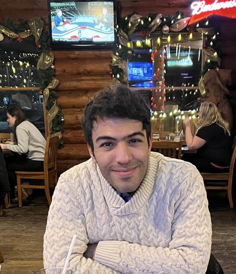

Machine Learning Engineer • Computer Vision • Vancouver, BC
Machine Learning Engineer with 5+ years building end-to-end ML and computer vision systems for high-stakes imaging workflows—from dataset preparation and experimentation to evaluation, optimization, and deployment-ready pipelines. Strong background in Python and PyTorch, with hands-on work in image segmentation, 3D imaging workflows, transformer-based vision models, and validation-driven system design. Comfortable moving from research-style prototyping to production-minded implementation while collaborating closely with domain experts and engineering teams to deliver reliable, measurable ML systems.
Corpus Christi & St. Mark’s Colleges @ UBC • Vancouver, BC
Cornerstone Intl. Community College of Canada (CICCC) • Vancouver, BC
University of British Columbia — Surgical Technologies Laboratory • Vancouver, BC
University of British Columbia & CICCC • Vancouver, BC
University of British Columbia • Vancouver, BC
University of British Columbia • Vancouver, BC
Tehran Polytechnic (Amirkabir University of Technology) • Tehran, Iran
Research Engineering — 2020–2024
Research Engineering — 2020–2024
Research Engineering — 2020–2024
Personal / Research — 2024
Master of Engineering — Electrical & Computer Engineering
University of British Columbia • Vancouver, BC, Canada
PhD Candidate — Biomedical Engineering
University of British Columbia • Vancouver, BC, Canada
M.A.Sc. — Biomedical Engineering
Tehran Polytechnic (Amirkabir University of Technology) • Tehran, Iran
B.A.Sc. — Mechanical Engineering
University of Tabriz • Tabriz, Iran